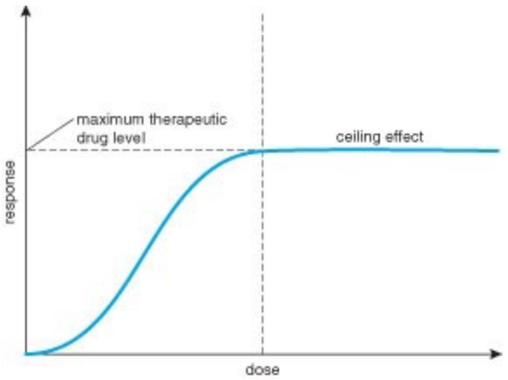
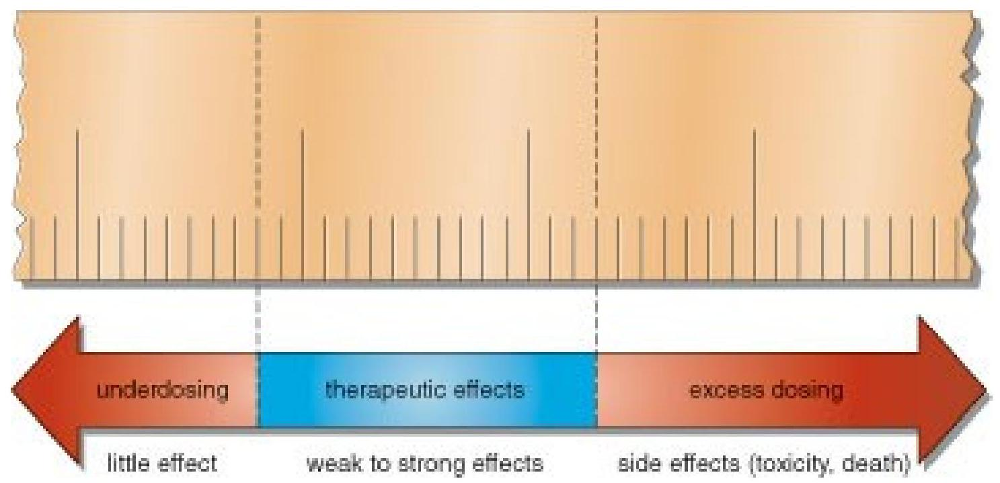
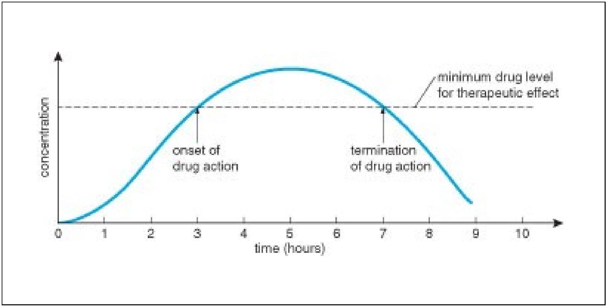

Introduction to NURSING PHARMACOLOGY BLOCK 1 and 2
Kariuki, Peter ©2015
Objectives
By the end of the course, the student should be able to:
- State the rights of drugs administration
- Adhere to the nursing considerations in drug administration
- Classify the drugs and stating the MOA, indications, S/E, contraindications
- Describe how to monitor drugs toxicities
- Adhere to controlled drugs act while administering controlled drugs.
DEFINITION OF TERMS
Absorption
Bioavailability: is defined as the fraction of unchanged drug reaching the systemic circulation following administration by any route.
Pharmacodynamics: drug effects and their mechanisms of action (effect).
Pharmacokinetics: processes of absorption, distribution, and elimination determine how rapidly and for how long the drug will appear at the target organ.
Half-life (t1/2): is the time required to change the amount of drug in the body by one-half during elimination (or during a constant infusion).
Drug interaction
Compliance
Adverse effects
Side effects
Prototype
Antidote
Clearance: the measure of the ability of the body to eliminate the drug.
Contraindication
Bacteriostatic
Bacteriocidal
Spectrum of activity
First-pass elimination: Following absorption across the gut wall, the portal blood delivers the drug to the liver prior to entry into the systemic circulation.
Therapeutic index: One measure, which relates the dose of a drug required to produce a desired effect to that which produces an undesired (toxic) effect.
Present-Day Pharmacology Practice
Medicinal Drugs
- Pharmacologic effects
- Drug actions on living system
- Classifications
Therapeutic drugs: relieve symptoms of a disease
Prophylactic drugs: used to prevent or decrease the severity of disease
Present-Day Pharmacology Practice
Pharmacognosy
- Study and identification of natural sources for drugs
- plants, animals, minerals, chemicals, recombinant DNA
- Biopharmaceuticals
- Produced by recombinant DNA technology
6 Nursing Pharmacology
Drug Names and Classifications
- Chemical Name
- Chemical makeup
- Generic name
- Name the manufacturer gives a drug
- USAN
- Nonproprietary drug, not protected by trademark
- Lowercase letter
- Brand name
- Trade name
- Copyrighted and used exclusively
Drug Legislation and Regulation
Food and Drug Administration (FDA)
- 1906, first attempt by U.S. government to regulate the sale of drugs or substances that affect the body
- 1927, formation of Food, Drug, and Insecticide Administration
- 1930, name changed to FDA
- 1938, passage of Food, Drug, and Cosmetic Act
- New Drug Application (NDA)
- 1951, Durham-Humphrey Amendment
- Legend drug
- Over-the-counter drug
Controlled Substances
Controlled Substances Act
- 1970
- Combat escalating drug abuse
- 1973, establishment of DEA
| Label | Abuse Potential |
|---|---|
| C-I | highest potential |
| C-II | high possibility, which can lead to severe dependence |
| C-III | less potential |
| C-IV | low potential |
| C-V | lowest potential |
Drug Testing and Approval
- FDA requires the manufacturer of a new drug to provide evidence of the drug's safety and effectiveness
- New Drug Application (NDA)
FDA Pregnancy Categories
| Category | Risk Level |
|---|---|
| A | No risk |
| B | Risk cannot be ruled out |
| C | Caution is advised |
| D | Is a definite risk |
| X | Do not use |
Receptors
A receptor is a protein molecule on the surface of or within a cell that recognizes and binds with specific molecules, thereby producing some effect within the cell.
- receptor site may have specificity
- the affinity is the strength by which a particular chemical messenger binds to its receptor site or cell
Mechanisms of Drug Action
Agonist
An agonist is a drug that binds to a particular receptor site and triggers the cell's response in a manner similar to the action of the body's own chemical messenger.
Chemical messengers........Neurotransmitters.
Examples; Serotonin, dopamine, acetylcholine, gaba among others.
Antagonist
An antagonist is a drug that binds to a receptor site and blocks the action of the endogenous messenger or other drugs.
Pharmacokinetics
Activity of a drug within the body over a period of time.
Includes ADME (Absorption, distribution, metabolism and elimination).
- absorption
- distribution
- metabolism
- elimination
Absorption
Process whereby the drug enters the circulatory system
Distribution
Process by which a drug moves from the blood into other body fluids (blood, lymph and CSF) and tissues and ultimately to its sites of action.
Blood flow is the rate-limiting factor.
Metabolism
Process by which drugs are chemically converted to compounds and then excreted through metabolic pathways.
Induction Inhibition
Elimination
Clearance is the rate at which a drug is eliminated from a specific volume of blood per unit of time.
Dose-Response Curve
Therapeutic Range
Duration of Action
Pharmacokinetic Modeling
Method of describing the process of ADME of a drug within the body